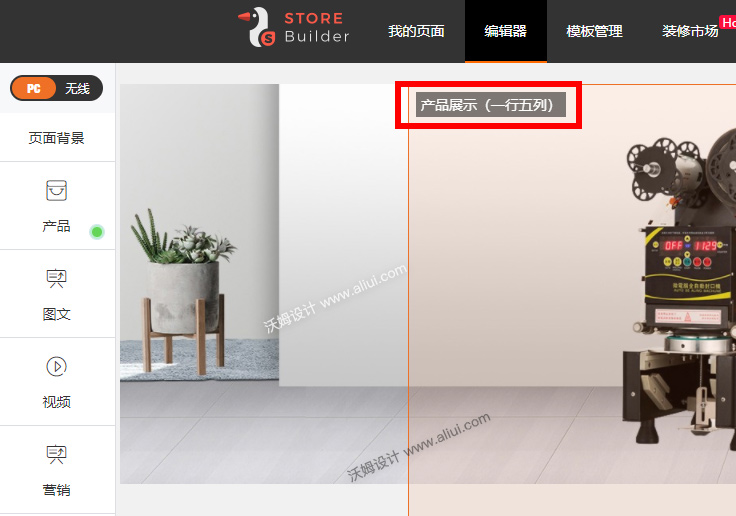
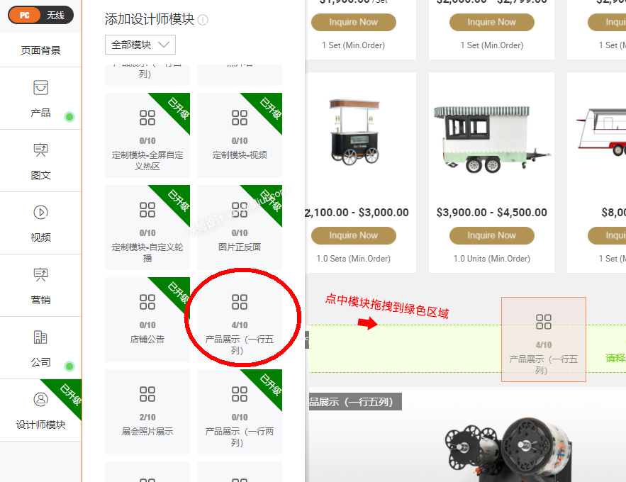
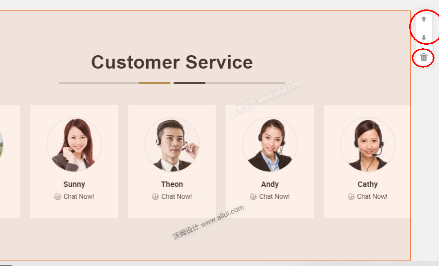
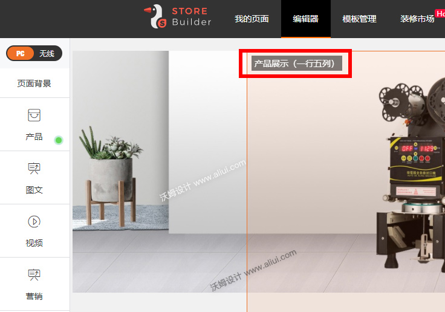
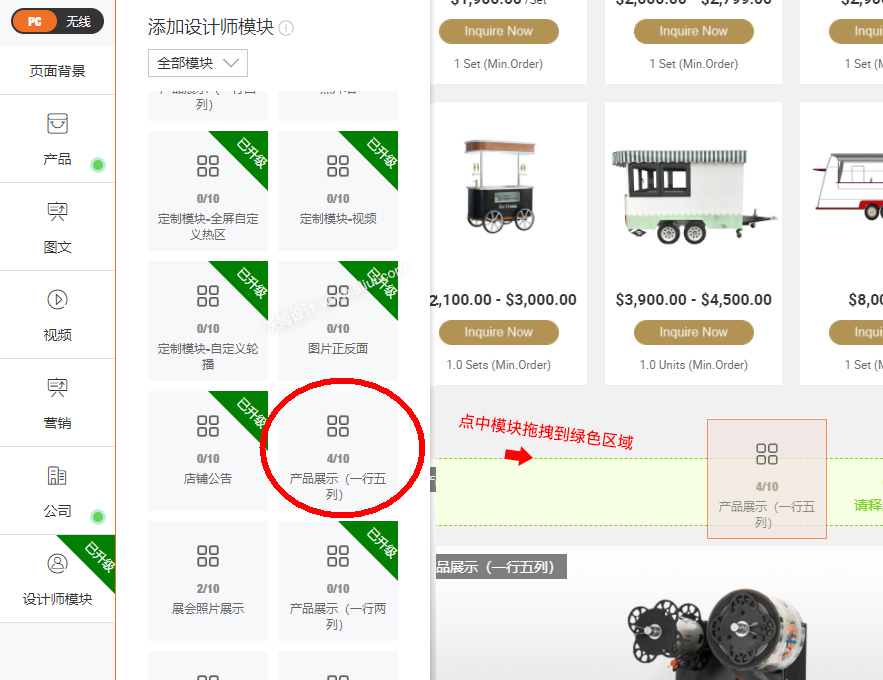
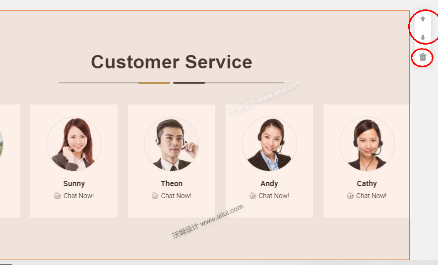

第一步:
举例下图所示，想重复再添加一个商品模块，鼠标移动在模块区域会显示出模块的名字。 
第二步:
如图所示，点击左侧的“设计师模块” 在设计师模块中找到同样名字的模块，点击拖拽到装修区域。松开鼠标完成模块的重复添加。 
调整模块上下位置或删除模块
如图所示，鼠标移动到模块会显示 调整位置按钮和删除按钮。 

 编辑:沃姆设计
编辑:沃姆设计
举例下图所示，想重复再添加一个商品模块，鼠标移动在模块区域会显示出模块的名字。 
如图所示，点击左侧的“设计师模块” 在设计师模块中找到同样名字的模块，点击拖拽到装修区域。松开鼠标完成模块的重复添加。 
如图所示，鼠标移动到模块会显示 调整位置按钮和删除按钮。 